Main Content
This is the main content of the page.
Best practices for creating dynamic and responsive user interfaces using HTML5 and CSS3 for modern web applications.
In today’s web, building engaging and responsive user interfaces is critical to providing users with a seamless experience. HTML5 and CSS3 form the backbone of modern web development, offering powerful tools to create dynamic, interactive, and responsive UIs. This guide covers best practices for leveraging HTML5’s structural elements and CSS3’s styling and animation capabilities to build effective UIs for modern web applications.
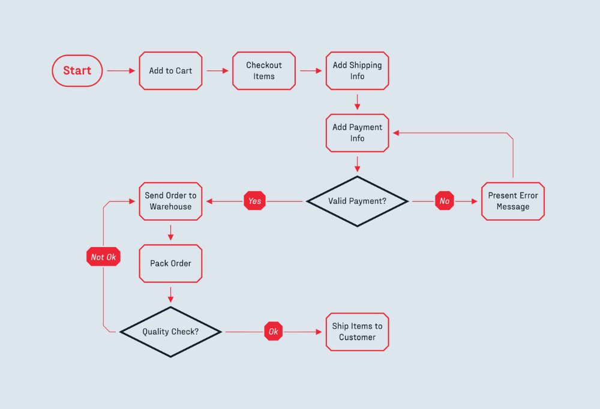Using semantic HTML elements is crucial for creating well-structured,
accessible, and SEO-friendly web applications. HTML5 introduces a variety of
semantic tags, such as <article>,
<section>, and <header>, that provide
meaning to the page's content, making it easier for search engines and
assistive technologies to interpret.
Best Practices for Semantic HTML:
<header>, <footer>, and
<nav> for defining the structure of your application.
<article> and <section> to
break down content logically.
Website Title
Main Content
This is the main content of the page.
Creating responsive layouts is essential to ensure that your web application works across different screen sizes and devices. CSS3 offers two powerful layout modules: **Flexbox** and **CSS Grid**. These tools allow you to build flexible and responsive designs with minimal effort.
Flexbox: Great for creating one-dimensional layouts, like rows and columns.
CSS Grid: Ideal for building two-dimensional layouts, where both rows and columns need to be defined.
/* Flexbox example for a row layout */
.container {
display: flex;
justify-content: space-between;
align-items: center;
}
/* CSS Grid example for a responsive layout */
.grid-container {
display: grid;
grid-template-columns: repeat(auto-fill, minmax(200px, 1fr));
gap: 20px;
}
Responsive design ensures that your application looks great on all devices, from desktops to mobile phones. **Media queries** allow you to apply different CSS styles based on the device’s screen size, orientation, or resolution.
Best Practices for Media Queries:
/* Mobile-first styles */
body {
font-size: 16px;
}
/* Tablet and larger screens */
@media (min-width: 768px) {
body {
font-size: 18px;
}
}
/* Desktop screens */
@media (min-width: 1024px) {
body {
font-size: 20px;
}
}
CSS3 introduces powerful tools for creating interactive and engaging user experiences, such as **transitions** and **animations**. Transitions allow you to smoothly change property values (e.g., color or size) when triggered by events like hover, while animations allow for more complex movements and effects over time.
Best Practices for CSS3 Transitions and Animations:
/* Example of CSS transition for a hover effect */
button {
background-color: blue;
transition: background-color 0.3s ease;
}
button:hover {
background-color: red;
}
/* Example of keyframe animation for a sliding effect */
@keyframes slideIn {
from {
transform: translateX(-100%);
}
to {
transform: translateX(0);
}
}
.element {
animation: slideIn 1s ease-in-out;
}
Building interactive UIs isn't just about visuals and functionality—it’s also about accessibility. **ARIA (Accessible Rich Internet Applications)** attributes provide additional information to screen readers, ensuring that users with disabilities can navigate and interact with your application effectively.
Best Practices for Accessibility:
button:focus {
outline: 2px solid blue;
}
CSS3 allows you to define **CSS variables** (also called custom properties), which make managing styles much easier, especially for large projects. Variables let you store values like colors or font sizes in one place and reuse them throughout your stylesheet, improving consistency and maintainability.
How to Use CSS Variables:
:root so they can
be accessed globally.
/* Defining CSS variables */
:root {
--primary-color: #3498db;
--font-size: 16px;
}
/* Using variables */
button {
background-color: var(--primary-color);
font-size: var(--font-size);
}
Performance is a critical aspect of building interactive UIs. CSS3 and HTML5 provide various techniques for improving the speed and efficiency of your application. Consider using **CSS3 animations** over JavaScript for smoother performance and **lazy loading** for media to reduce initial load times.
Best Practices for Performance Optimization:
loading="lazy" attribute in HTML5.
Building interactive and responsive user interfaces with HTML5 and CSS3 is more accessible than ever, thanks to new features like Flexbox, Grid, media queries, transitions, and animations. By following best practices, including semantic HTML, responsive design, and performance optimization, you can create modern UIs that are engaging, accessible, and efficient across all devices and platforms.
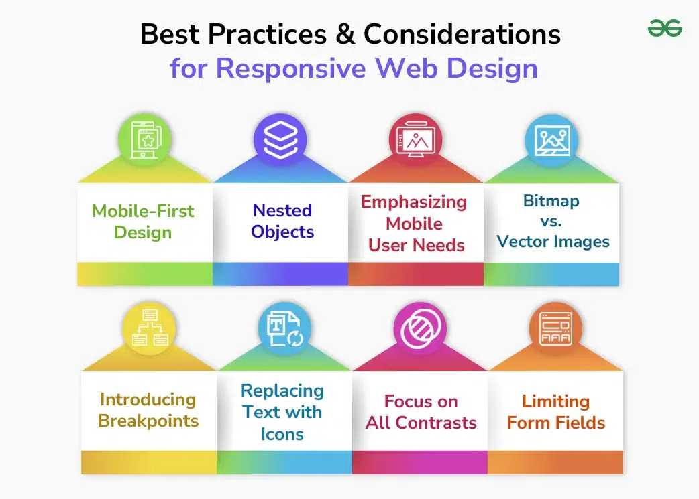-A deep dive into building high-performance, scalable web applications using modern JavaScript best practices.
Building scalable web applications is one of the biggest challenges for developers today, especially with the increasing demand for real-time data and highly interactive user interfaces. JavaScript, with its powerful frameworks and modern features, is at the forefront of building high-performance, scalable web applications. In this guide, we’ll take a deep dive into best practices for creating scalable web apps using JavaScript, focusing on modular architecture, asynchronous programming, and performance optimization.
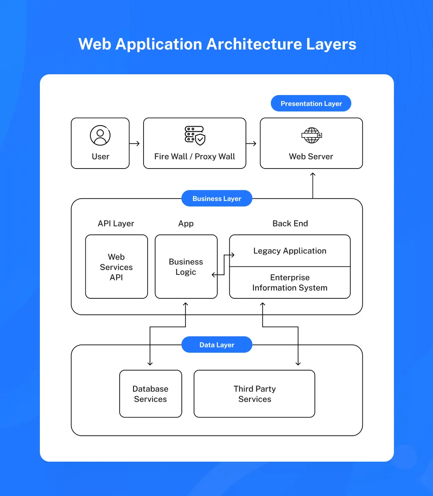One of the key principles for building scalable web applications is adopting a modular architecture. Breaking your code into smaller, reusable modules makes it easier to maintain and scale as your application grows. JavaScript’s ES6 module system allows for better code organization and separation of concerns.
Best Practices for Modular Architecture:
// Example of an ES6 module
export function calculateTotal(price, quantity) {
return price * quantity;
}
// Importing and using the module
import { calculateTotal } from './utils.js';
console.log(calculateTotal(20, 5));
Scalability requires handling large amounts of data and multiple concurrent requests efficiently. Asynchronous programming in JavaScript allows your app to handle tasks such as API requests and file reading without blocking the execution of other tasks. Using Promises, async/await, and web workers improves performance, particularly for I/O-bound tasks.
Best Practices for Asynchronous Programming:
// Example of async/await
async function fetchData() {
try {
const response = await fetch('https://api.example.com/data');
const data = await response.json();
console.log(data);
} catch (error) {
console.error('Error fetching data:', error);
}
}
fetchData();
Modern frontend frameworks such as React, Vue.js, and Angular provide powerful tools for building scalable applications. These frameworks introduce component-based architectures, state management, and optimized rendering techniques like the Virtual DOM, which reduce the load on the browser and allow applications to handle more data efficiently.
Best Practices for Frameworks:
// Example of a React component
function UserProfile({ user }) {
return (
{user.name}
{user.email}
);
}

For large web applications, it's important to optimize load times. Lazy loading and code splitting allow you to load only the necessary parts of your application when needed, improving initial page load performance. By breaking your app into smaller chunks, you ensure that users aren’t downloading code they don’t need right away.
Best Practices for Lazy Loading and Code Splitting:
// Example of lazy loading in React
const LazyComponent = React.lazy(() => import('./LazyComponent'));
function App() {
return (
Loading... Reducing the number of network requests and optimizing payloads is key to improving scalability and performance. Techniques such as API caching, GraphQL, and pagination ensure that you don’t overload the server or the client with unnecessary data.
Best Practices for Optimizing Network Requests:
// Example of a GraphQL query
query {
user(id: 1) {
name
posts {
title
comments {
content
}
}
}
}
Service Workers allow you to improve performance by enabling offline capabilities and caching. Service Workers sit between the network and the browser, intercepting network requests and serving cached content when needed. This reduces the reliance on network availability, especially for mobile devices, and improves application performance.
Best Practices for Service Workers:
// Example of a Service Worker that caches static assets
self.addEventListener('install', (event) => {
event.waitUntil(
caches.open('v1').then((cache) => {
return cache.addAll(['/index.html', '/styles.css', '/app.js']);
})
);
});
Automated testing is critical for ensuring that your application scales as more features are added. Tools like Jest for unit testing, Cypress for end-to-end testing, and Lighthouse for performance testing help ensure that your application remains performant and scalable.
Best Practices for Testing:
// Example of a Jest unit test
test('fetches

Initially, I focused on using vanilla JavaScript for enhancing user interfaces, creating form validations, and handling user interactions. One of my first significant projects involved building an interactive web form that dynamically validated inputs and responded to user actions without requiring page reloads.

As I progressed, I embraced frontend frameworks like Vue.js and React, which streamlined the development process and enabled me to create more structured, scalable applications. I began leveraging component-based architectures and the Virtual DOM, which dramatically improved the performance of the applications I built.

Expanding my JavaScript skills, I ventured into full-stack development with Node.js. This opened doors to backend development, where I applied JavaScript not just in the browser but also on the server, creating RESTful APIs and working with databases like MongoDB.

With the release of ES6 (ECMAScript 2015), JavaScript became even more powerful. I quickly adopted the new features like arrow functions, template literals, destructuring, and async/await to improve code readability and performance. These additions significantly reduced the boilerplate code and improved how I approached asynchronous programming.
Website development is the process of building, programming, coding and maintaining websites and web applications.
Website development is the process of building, programming, coding and maintaining websites and web applications.
Website development is the process of building, programming, coding and maintaining websites and web applications.
Website development is the process of building, programming, coding and maintaining websites and web applications.

-A deep dive into building high-performance, scalable web applications using modern JavaScript best practices.
In the modern web, real-time applications have become critical for delivering dynamic user experiences. From live chats to real-time analytics dashboards, Node.js offers a powerful event-driven architecture that allows developers to build highly responsive, scalable real-time applications. This guide will walk you through leveraging Node.js for real-time data processing and event-driven architectures, using technologies such as WebSockets and Node.js streams.
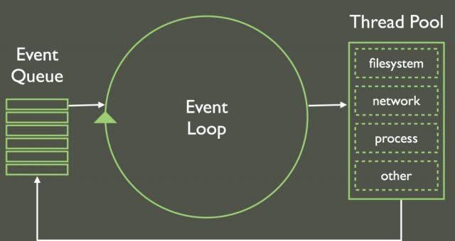Node.js is ideal for real-time applications because it is **non-blocking** and **event-driven**, meaning it can handle numerous concurrent connections efficiently. Whether you are building chat apps, collaboration tools, or live data dashboards, Node.js enables fast, real-time communication between the client and server.
Key Advantages of Node.js for Real-Time Applications:
Unlike HTTP, which follows a request-response model, **WebSockets** allow for bi-directional communication between the client and the server, making it perfect for real-time applications. With WebSockets, once a connection is established, the server can push updates to the client without waiting for the client to make another request.
Setting Up WebSockets with Node.js:
// WebSocket server using Socket.io
const io = require('socket.io')(3000);
io.on('connection', socket => {
console.log('New user connected');
socket.on('message', message => {
io.emit('message', message); // Broadcasts the message to all connected clients
});
});
This simple setup allows you to build real-time chat applications where messages are broadcast to all connected users instantly.
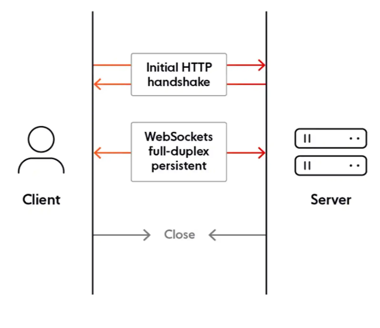**Node.js streams** allow you to process data piece by piece as it becomes available, which is ideal for handling large amounts of real-time data such as video streams, logs, or file uploads. Instead of loading the entire data set into memory, streams enable you to process data in chunks, improving performance and scalability.
// Example of a readable stream in Node.js
const fs = require('fs');
const stream = fs.createReadStream('largeFile.txt');
stream.on('data', chunk => {
console.log('Processing chunk:', chunk);
});
stream.on('end', () => {
console.log('Finished processing the file');
});
Streams are commonly used in real-time applications to process live data efficiently, without overloading system resources.
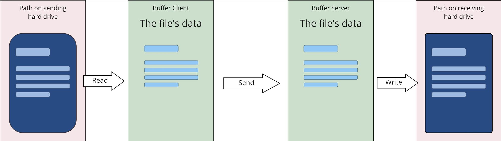As your real-time application grows, you may need to scale it to handle thousands or even millions of connections. Node.js can be scaled using **clustering**, where multiple instances of the Node.js application run on different CPU cores, allowing you to handle more requests simultaneously.
Setting Up Clustering in Node.js:
// Node.js clustering example
const cluster = require('cluster');
const http = require('http');
const numCPUs = require('os').cpus().length;
if (cluster.isMaster) {
// Fork workers
for (let i = 0; i < numCPUs; i++) {
cluster.fork();
}
cluster.on('exit', (worker) => {
console.log(`Worker ${worker.process.pid} died, starting a new worker`);
cluster.fork();
});
} else {
// Workers can share the same TCP connection
http.createServer((req, res) => {
res.writeHead(200);
res.end('Hello World\n');
}).listen(8000);
}
Clustering helps scale your Node.js application across multiple CPU cores, improving its ability to handle concurrent connections.
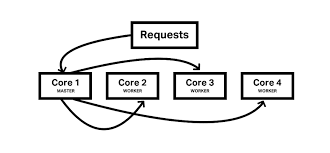**Socket.IO** is a popular library that simplifies real-time communication in Node.js. It abstracts away the complexities of WebSockets, enabling developers to build real-time APIs quickly. With Socket.IO, you can create features like real-time notifications, collaboration tools, and live data updates.
Example of Real-Time Notifications with Socket.IO:
// Real-time notifications with Socket.IO
const io = require('socket.io')(3000);
io.on('connection', socket => {
socket.on('send-notification', data => {
// Emit the notification to all connected users
io.emit('receive-notification', data);
});
});
This setup can be used to push real-time notifications to all connected users whenever an event occurs in your application.
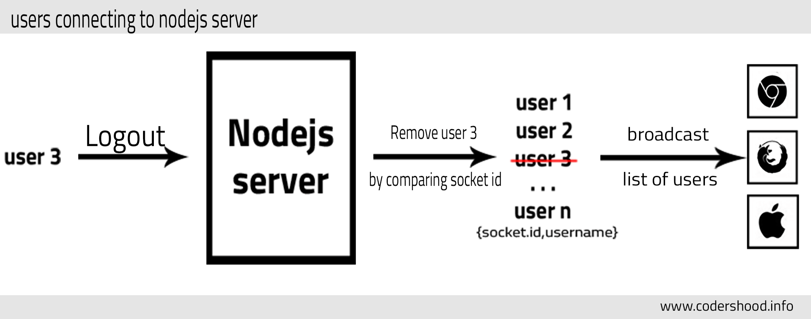Real-time applications can be vulnerable to attacks such as **man-in-the-middle attacks**, **data injection**, and **cross-site scripting (XSS)**. It’s important to implement security best practices such as using **HTTPS**, **authentication**, and **input validation** to secure your real-time Node.js application.
Best Practices for Securing Real-Time Applications:
// Example of securing a WebSocket connection with JWT authentication
const jwt = require('jsonwebtoken');
const io = require('socket.io')(3000);
io.use((socket, next) => {
const token = socket.handshake.query.token;
if (jwt.verify(token, 'secretKey')) {
return next();
}
return next(new Error('Authentication error'));
});
io.on('connection', socket => {
console.log('User connected');
});

Building real-time applications with Node.js enables developers to create highly interactive and responsive user experiences. By leveraging WebSockets, Node.js streams, and clustering, you can build scalable real-time systems that efficiently handle multiple concurrent connections. Whether you’re building a chat application, real-time dashboard, or collaborative tool, Node.js provides the architecture and tools needed to create robust, secure, and scalable real-time applications.
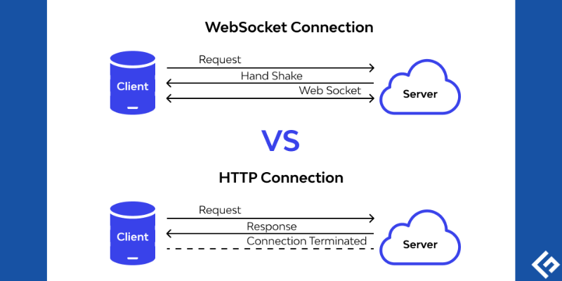
Initially, I focused on using vanilla JavaScript for enhancing user interfaces, creating form validations, and handling user interactions. One of my first significant projects involved building an interactive web form that dynamically validated inputs and responded to user actions without requiring page reloads.
As I progressed, I embraced frontend frameworks like Vue.js and React, which streamlined the development process and enabled me to create more structured, scalable applications. I began leveraging component-based architectures and the Virtual DOM, which dramatically improved the performance of the applications I built.
Expanding my JavaScript skills, I ventured into full-stack development with Node.js. This opened doors to backend development, where I applied JavaScript not just in the browser but also on the server, creating RESTful APIs and working with databases like MongoDB.
With the release of ES6 (ECMAScript 2015), JavaScript became even more powerful. I quickly adopted the new features like arrow functions, template literals, destructuring, and async/await to improve code readability and performance. These additions significantly reduced the boilerplate code and improved how I approached asynchronous programming.
Website development is the process of building, programming, coding and maintaining websites and web applications.
Website development is the process of building, programming, coding and maintaining websites and web applications.
Website development is the process of building, programming, coding and maintaining websites and web applications.
Website development is the process of building, programming, coding and maintaining websites and web applications.
- A comprehensive guide on enhancing security in Laravel applications through authentication, encryption, and secure coding practices.
Laravel is a popular PHP framework known for its elegant syntax and powerful tools for building web applications. However, with the increasing complexity of modern web apps, security has become a top priority. This guide provides best practices for securing your Laravel applications, focusing on **authentication**, **encryption**, and **secure coding** techniques. By implementing these strategies, you can reduce vulnerabilities and protect your application from common security threats.
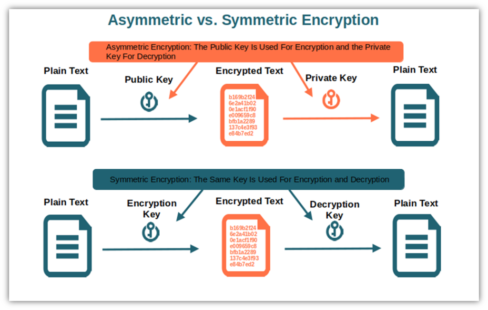Laravel provides a robust authentication system out of the box, making it easy to implement login and registration functionality. However, there are additional steps you can take to enhance security.
Best Practices for Authentication:
// Example of setting up authentication in Laravel
php artisan make:auth
To add two-factor authentication (2FA), you can use **Laravel Fortify** to easily enable 2FA for user accounts.
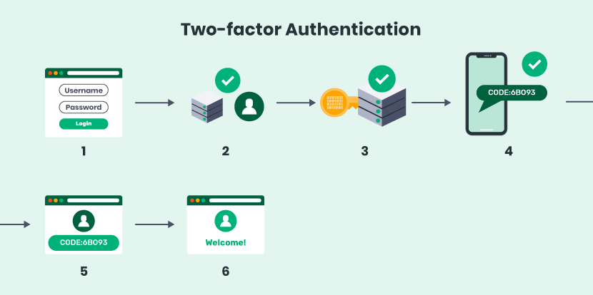Laravel comes with built-in encryption capabilities that use the **AES-256 encryption algorithm**, which ensures that sensitive data stored in the database cannot be read if compromised. Laravel’s encryption functions are easy to use, making it simple to store and retrieve encrypted data.
Best Practices for Encryption:
// Example of hashing a password using bcrypt
use Illuminate\Support\Facades\Hash;
$password = Hash::make('password');
For additional security, you can encrypt other sensitive information such as personal identification numbers (PINs) or financial data before storing it in the database.
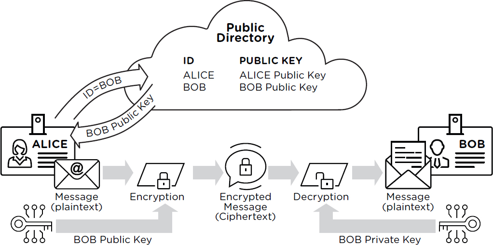SQL injection is one of the most common and dangerous web vulnerabilities. Laravel’s **Eloquent ORM** and **query builder** automatically use **prepared statements** and bindings, protecting your application from SQL injection attacks.
Best Practices for Preventing SQL Injection:
// Example of using Eloquent to avoid SQL injection
$users = DB::table('users')->where('email', $email)->get();
Even with raw SQL queries, Laravel’s query builder protects against injection by binding variables.
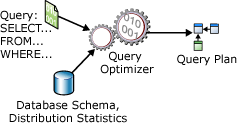**Cross-site scripting (XSS)** attacks allow attackers to inject malicious scripts into web pages viewed by other users. Laravel automatically protects against XSS by escaping any data output from Blade templates. However, developers need to ensure they follow the right practices to mitigate XSS attacks further.
Best Practices for XSS Protection:
{{ }} to display user-generated content safely.
// Example of Blade escaping to prevent XSS
{{ $user->name }}
Escaping outputs in Blade templates ensures that no malicious JavaScript is executed in the user’s browser.
**Cross-Site Request Forgery (CSRF)** attacks occur when a malicious website tricks users into performing unwanted actions on a different site where they are authenticated. Laravel provides CSRF protection by automatically including a **CSRF token** in forms generated by the Blade templating engine.
Best Practices for CSRF Protection:
// Example of adding CSRF token to a form
CSRF tokens ensure that only authorized requests are made, preventing third-party websites from initiating unwanted actions.
Uploading files is a common feature in web applications, but it can introduce security vulnerabilities if not handled properly. Malicious users can upload dangerous files like scripts or viruses if files aren’t properly validated and sanitized.
Best Practices for Securing File Uploads:
// Example of validating file uploads in Laravel
$request->validate([
'photo' => 'required|image|mimes:jpeg,png,jpg,gif|max:2048',
]);
Validating and sanitizing file uploads helps ensure that only safe and secure files are uploaded to your server.
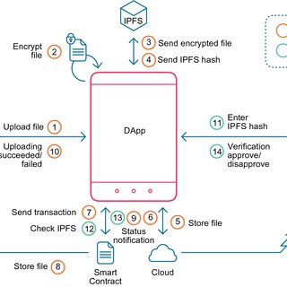Securing API endpoints is critical, especially if you are building a Laravel application that exposes APIs for mobile apps or third-party services. Laravel provides various tools for authenticating API requests and protecting sensitive data.
Best Practices for Securing APIs:
// Example of securing an API route using Laravel Passport
Route::middleware('auth:api')->get('/user', function (Request $request) {
return $request->user();
});
Laravel’s Passport and Sanctum make it easy to secure API routes, ensuring only authenticated users can access sensitive data.
Securing your Laravel applications requires a multi-layered approach, focusing on authentication, encryption, and safe coding practices. By following these best practices, including using Laravel’s built-in authentication and encryption systems, preventing SQL injection, and securing API endpoints, you can significantly reduce the risk of common vulnerabilities. Regularly updating your application and applying security patches are equally important in maintaining a secure application environment.
Website development is the process of building, programming, coding and maintaining websites and web applications.
Website development is the process of building, programming, coding and maintaining websites and web applications.
Website development is the process of building, programming, coding and maintaining websites and web applications.
Website development is the process of building, programming, coding and maintaining websites and web applications.
- A guide to building cross-platform mobile applications with Dart and Flutter for Android and iOS.
Building mobile applications for both Android and iOS traditionally required developing separate codebases for each platform, which was time-consuming and costly. However, with **Dart** and **Flutter**, developers can build high-performance, cross-platform mobile applications using a single codebase. Flutter is Google's UI toolkit for creating natively compiled applications, and Dart is the language that powers it. This guide will walk you through the basics of developing mobile applications with Dart and Flutter, from setup to building responsive UIs and deploying apps to both platforms.
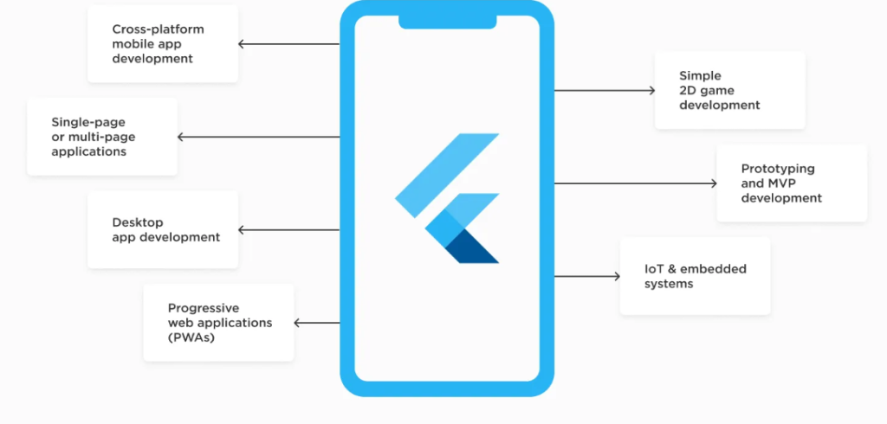Flutter has become one of the most popular frameworks for cross-platform mobile development due to its **native performance**, **expressive UI**, and **hot reload** feature. Dart, as the language behind Flutter, provides fast development cycles and an efficient runtime for mobile apps.
Key Benefits of Using Dart and Flutter:
Before you can start building Flutter apps, you need to set up the development environment for both Android and iOS. Flutter provides all the necessary tools, and it works with popular IDEs like **VS Code** and **Android Studio**.
Steps to Set Up Flutter:
// Example of using Flutter Doctor to verify setup
flutter doctor
Running `flutter doctor` will identify any missing dependencies, ensuring you have a properly configured environment for Flutter development.
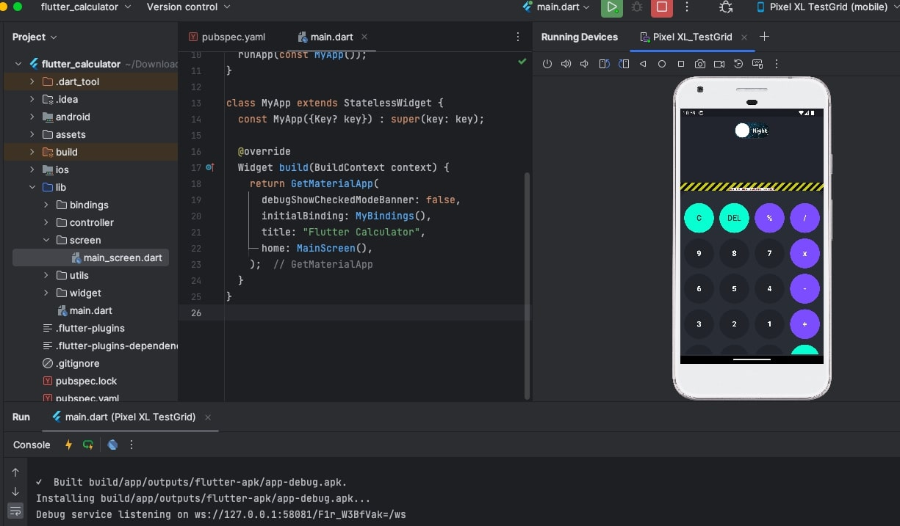With Flutter installed, you can create your first app using the `flutter create` command. Flutter uses a **widget-based architecture**, where everything from the app’s structure to UI components is built using widgets. The core of every Flutter app is the **main()** function, which calls the **runApp()** method to render the app on the screen.
Basic Flutter App Structure:
// Main entry point for a Flutter app
void main() {
runApp(MyApp());
}
class MyApp extends StatelessWidget {
@override
Widget build(BuildContext context) {
return MaterialApp(
home: Scaffold(
appBar: AppBar(
title: Text('Hello Flutter'),
),
body: Center(
child: Text('Welcome to Flutter!'),
),
),
);
}
}
This example shows a basic Flutter app with a centered text widget. Running the app will display “Welcome to Flutter!” in the middle of the screen.
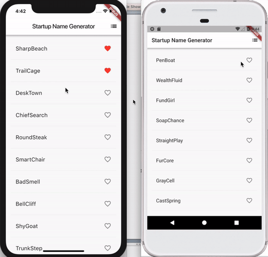Flutter provides a rich set of **widgets** for building responsive UIs that adapt to different screen sizes and orientations. You can create layouts using widgets like **Container**, **Row**, **Column**, **Stack**, and more. Flutter’s flexible layout system allows you to build complex and adaptive interfaces with ease.
Commonly Used Widgets for Layouts:
// Example of building a responsive layout using Row and Column
class MyResponsiveWidget extends StatelessWidget {
@override
Widget build(BuildContext context) {
return Scaffold(
appBar: AppBar(
title: Text('Responsive UI'),
),
body: Column(
children: [
Row(
mainAxisAlignment: MainAxisAlignment.center,
children: [
Container(color: Colors.red, width: 100, height: 100),
Container(color: Colors.blue, width: 100, height: 100),
],
),
Expanded(
child: ListView(
children: [
Text('Item 1'),
Text('Item 2'),
Text('Item 3'),
],
),
),
],
),
);
}
}
In this example, we use **Row** and **Column** to create a responsive layout with colored containers and a scrollable list view.

In Flutter, **state management** is critical for handling user input, dynamic data, and UI updates. Flutter provides several ways to manage state, including **setState()** for local state, and more advanced solutions like **Provider**, **Bloc**, and **Riverpod** for global state management.
Basic State Management Using setState():
// Example of managing state with setState()
class CounterApp extends StatefulWidget {
@override
_CounterAppState createState() => _CounterAppState();
}
class _CounterAppState extends State {
int _counter = 0;
void _incrementCounter() {
setState(() {
_counter++;
});
}
@override
Widget build(BuildContext context) {
return Scaffold(
appBar: AppBar(
title: Text('Counter App'),
),
body: Center(
child: Text('Counter: $_counter'),
),
floatingActionButton: FloatingActionButton(
onPressed: _incrementCounter,
child: Icon(Icons.add),
),
);
}
}
Here, the **setState()** method is used to update the counter and re-render the UI whenever the floating action button is pressed.
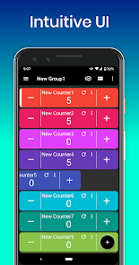Most mobile applications need to interact with remote APIs to fetch or send data. Flutter uses the **http** package to make HTTP requests and handle JSON data. This allows developers to integrate APIs seamlessly into their apps.
Fetching Data from a REST API:
import 'package:http/http.dart' as http;
import 'dart:convert';
Future> fetchPosts() async {
final response = await http.get('https://jsonplaceholder.typicode.com/posts');
if (response.statusCode == 200) {
List jsonResponse = json.decode(response.body);
return jsonResponse.map((post) => Post.fromJson(post)).toList();
} else {
throw Exception('Failed to load posts');
}
}
This example demonstrates how to fetch a list of posts from an API and parse the JSON response into Dart objects.
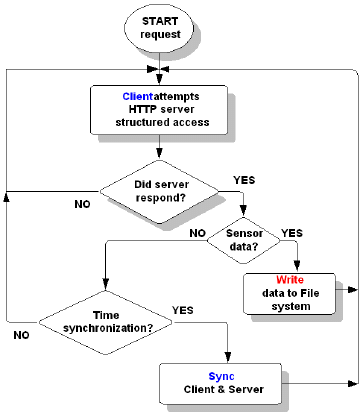One of the major benefits of Flutter is that the same codebase can be deployed to both Android and iOS. The Flutter CLI provides simple commands to build APKs for Android and IPAs for iOS.
Steps to Deploy Your Flutter App:
// Building APK for Android
flutter build apk
// Building IPA for iOS (requires Mac)
flutter build ios
Flutter’s ability to compile apps for both platforms simplifies the deployment process significantly.
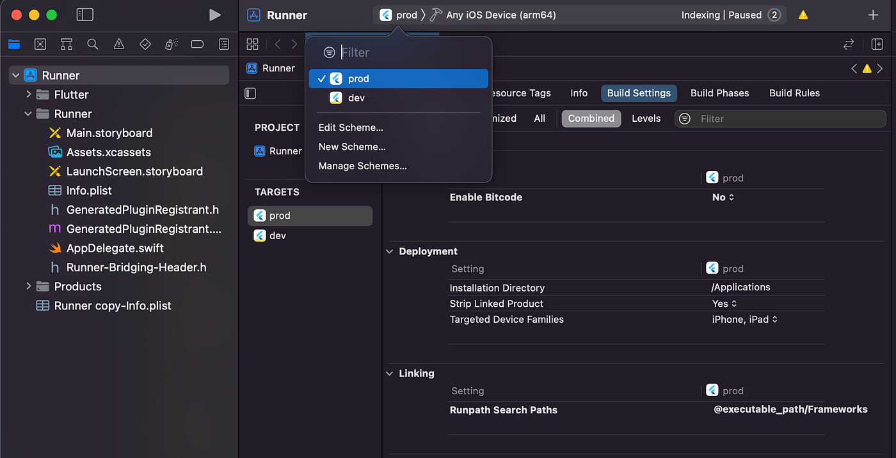Developing cross-platform mobile applications with Dart and Flutter offers an efficient, scalable, and high-performance solution. From setting up your environment to building responsive UIs, managing state, and deploying your app to Android and iOS, Flutter’s toolkit makes the development process seamless. Whether you’re building a simple mobile app or a complex, dynamic application, Flutter provides the flexibility to create beautiful, native-like experiences across both platforms.
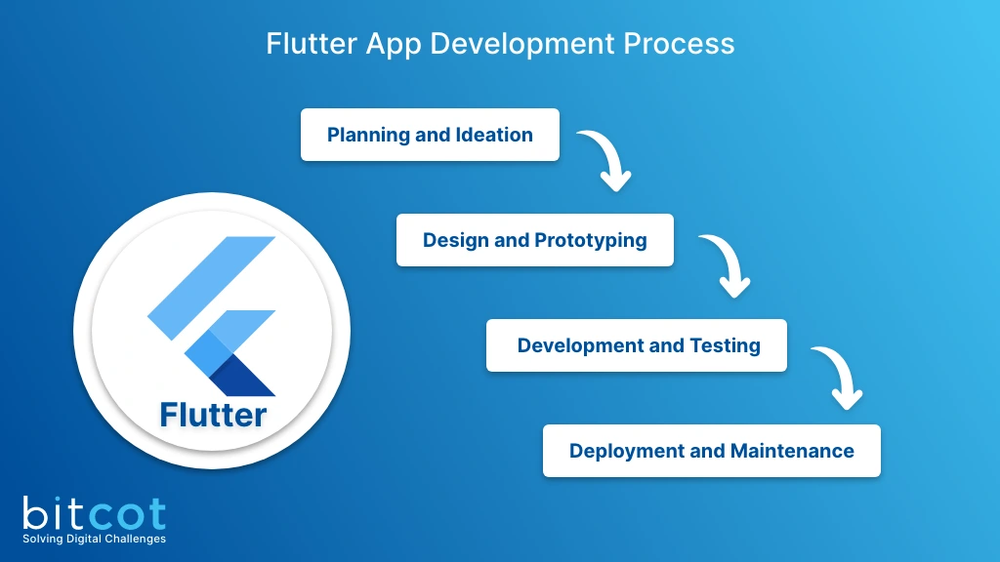
Website development is the process of building, programming, coding and maintaining websites and web applications.
Website development is the process of building, programming, coding and maintaining websites and web applications.
Website development is the process of building, programming, coding and maintaining websites and web applications.
Website development is the process of building, programming, coding and maintaining websites and web applications.
-Developing robust backend systems using PHP and MongoDB for high-availability applications.
When building modern backend systems, choosing the right technology stack is essential for achieving high availability and scalability. **PHP** remains a popular choice for server-side scripting, while **MongoDB**, as a NoSQL database, provides a flexible and scalable solution for handling large datasets. Together, PHP and MongoDB allow developers to create robust backend systems capable of handling dynamic data structures and high traffic loads. This guide explores how to develop backend systems using PHP and MongoDB, covering CRUD operations, data structuring, and scaling strategies.
Combining **PHP** and **MongoDB** offers the best of both worlds for developing high-performance backend systems. PHP is easy to use and widely adopted for server-side scripting, while MongoDB’s schema-less architecture provides flexibility in handling unstructured data.
Key Benefits of Using PHP and MongoDB:
Before building an application, you need to configure PHP to interact with MongoDB. PHP requires the **MongoDB PHP extension** to connect to MongoDB and perform database operations.
Steps to Set Up PHP and MongoDB:
// Install the MongoDB PHP extension using Composer
composer require mongodb/mongodb
Once installed, you can connect PHP to MongoDB as shown below:
// Connecting PHP to MongoDB
require 'vendor/autoload.php';
$client = new MongoDB\Client("mongodb://localhost:27017");
$collection = $client->mydatabase->mycollection;
MongoDB uses a **document-oriented model**, meaning data is stored in JSON-like documents rather than rows and columns. With PHP, you can perform **CRUD operations** (Create, Read, Update, Delete) directly on these documents using MongoDB’s PHP library.
// Inserting a document into MongoDB
$collection->insertOne([
'name' => 'John Doe',
'email' => 'john.doe@example.com',
'created_at' => new MongoDB\BSON\UTCDateTime()
]);
// Fetching documents from MongoDB
$users = $collection->find(['name' => 'John Doe']);
foreach ($users as $user) {
echo $user['email'];
}
// Updating a document in MongoDB
$collection->updateOne(
['name' => 'John Doe'],
['$set' => ['email' => 'john.new@example.com']]
);
// Deleting a document from MongoDB
$collection->deleteOne(['name' => 'John Doe']);
Unlike SQL databases, MongoDB does not enforce a schema, which gives developers flexibility in designing how data is structured. However, it’s important to have a clear data model to maintain consistency across your application.
Best Practices for Structuring Data in MongoDB:
// Example of an embedded document in MongoDB
{
"_id": ObjectId("507f1f77bcf86cd799439011"),
"name": "John Doe",
"email": "john.doe@example.com",
"address": {
"street": "123 Main St",
"city": "Anytown",
"state": "CA"
}
}
As your MongoDB database grows, queries may slow down if you are not using indexes. Indexes help MongoDB efficiently find documents, similar to how indexes in a book help you find content without flipping through every page.
Best Practices for Indexing:
// Creating an index in MongoDB
$collection->createIndex(['email' => 1]); // Ascending index on the email field

MongoDB is built to scale. By leveraging features like **replica sets** and **sharding**, you can ensure that your database remains highly available and can handle increased loads as your application grows.
Scaling Strategies for MongoDB:
// Initializing a replica set in MongoDB
rs.initiate()
Securing your backend system is critical, especially when handling sensitive data. MongoDB provides several built-in security features, and combining these with secure PHP practices ensures a safe application.
Security Best Practices for PHP and MongoDB:
// Enabling authentication in MongoDB
security:
authorization: "enabled"
Developing backend systems with PHP and MongoDB provides the flexibility, performance, and scalability needed for modern web applications. Whether you are managing large datasets, handling complex queries, or ensuring high availability, PHP and MongoDB offer a powerful combination. By following best practices for structuring data, indexing, scaling, and security, you can build robust backend systems capable of handling high traffic and dynamic workloads.
Website development is the process of building, programming, coding and maintaining websites and web applications.
Website development is the process of building, programming, coding and maintaining websites and web applications.
Website development is the process of building, programming, coding and maintaining websites and web applications.
Website development is the process of building, programming, coding and maintaining websites and web applications.

Key strategies for securing web and mobile applications in today’s cyber threat landscape, covering encryption, authentication, and secure coding.
As the use of web and mobile applications continues to grow, so does the need for securing them against cyber threats. From data breaches to phishing attacks, modern applications are increasingly targeted by malicious actors. To safeguard user data and maintain the integrity of your applications, it’s critical to implement strong security measures. This guide outlines key strategies for securing both web and mobile applications, focusing on encryption, authentication, and secure coding practices.
Web and mobile applications often handle sensitive information, such as personal details, payment data, and login credentials. Failing to secure this data can lead to severe consequences, including data breaches, loss of user trust, and legal penalties. It is essential to implement comprehensive cybersecurity practices to protect against ever-evolving cyber threats.
Common Threats to Web and Mobile Applications:
One of the most effective ways to protect sensitive data is through **encryption**. Encryption ensures that even if data is intercepted or stolen, it cannot be read or used by unauthorized individuals. For web and mobile applications, it’s important to encrypt both data in transit (using SSL/TLS) and data at rest (using algorithms like AES-256).
Encryption Best Practices:
// Example of hashing a password in PHP using bcrypt
$hashedPassword = password_hash('userpassword', PASSWORD_BCRYPT);
Authentication is the process of verifying a user's identity before granting access to an application. Using strong authentication mechanisms is essential to prevent unauthorized access. Multifactor authentication (MFA) adds an extra layer of security, requiring users to verify their identity through multiple methods, such as passwords, SMS codes, or authentication apps.
Best Practices for Authentication:
// Example of 2FA using Node.js and Google Authenticator
const speakeasy = require('speakeasy');
const token = speakeasy.totp({
secret: 'your-2fa-secret',
encoding: 'base32'
});
console.log(token); // Sends OTP to user's mobile
With the rise of mobile applications, securing APIs and backends that mobile apps communicate with is critical. APIs can be vulnerable to attacks like **injection** or **denial of service (DoS)** if not properly secured. It’s important to implement strong authentication, authorization, and input validation for all API endpoints.
Best Practices for Securing APIs:
// Example of using JWT in an API with Node.js
const jwt = require('jsonwebtoken');
const token = jwt.sign({ userId: '12345' }, 'secretKey', { expiresIn: '1h' });
Writing secure code is one of the most fundamental aspects of cybersecurity. Many vulnerabilities, such as **SQL injection**, **cross-site scripting (XSS)**, and **cross-site request forgery (CSRF)**, can be prevented by following secure coding best practices. Developers must be proactive in ensuring that their code is free from common security flaws.
Key Secure Coding Practices:
// Example of a parameterized SQL query in PHP
$stmt = $pdo->prepare('SELECT * FROM users WHERE email = :email');
$stmt->execute(['email' => $email]);
$user = $stmt->fetch();

Mobile applications have unique security challenges that differ from traditional web applications. From ensuring that the mobile app's data is secure to preventing reverse engineering, mobile developers must take extra steps to safeguard their applications.
Best Practices for Mobile App Security:
// Example of storing sensitive data securely in Android Keystore
KeyStore keyStore = KeyStore.getInstance("AndroidKeyStore");
keyStore.load(null);
Outdated software and dependencies can introduce vulnerabilities into your application. Ensure that you regularly update your libraries, frameworks, and dependencies to patch any known security flaws. This applies to both the web backend and mobile app libraries.
Best Practices for Keeping Software Secure:
// Example of checking for vulnerable dependencies with npm
npm audit
Securing modern web and mobile applications is a continuous process that requires vigilance, proper encryption, strong authentication, and secure coding practices. By following the key strategies outlined in this guide—such as encrypting sensitive data, implementing two-factor authentication, securing APIs, and writing secure code—you can mitigate common security risks and protect your applications from cyber threats. As the threat landscape evolves, staying updated with security best practices and patches is essential for keeping your applications safe.

 April 12, 2023
April 12, 2023
In today's fast-paced digital landscape, web applications must handle increasing user traffic, provide seamless user experiences, and scale efficiently. JavaScript, being the backbone of modern web development, offers numerous tools, frameworks, and best practices to build scalable web applications. This article explores how developers can leverage JavaScript to create web apps that are not only high-performing but can also scale to accommodate growing demands.
Why scalability matters in modern web applications. The role of JavaScript in building scalable web apps. Challenges of scaling JavaScript applications.
One of the first steps in building scalable web apps is adopting a modular architecture. Rather than writing monolithic code, breaking down your application into smaller, reusable modules makes it easier to maintain, test, and scale.
Example: Using ES6 modules to structure your application.
To handle large amounts of data and numerous requests, asynchronous programming is critical. JavaScript offers several approaches, like Promises, async/await, and web workers, to manage this efficiently.
Best Practice: Use
async/await for better readability
and error handling.
JavaScript frameworks like React, Vue, and Angular provide excellent structures for building scalable web applications by encouraging reusable components and efficient data handling.
React Example: Discuss how React’s Virtual DOM optimizes performance and how component-based architecture supports scalability.
Handling complex state in large-scale applications is challenging. State management libraries like Redux or Vuex help manage state across components effectively.
Best Practice: Use state management libraries to centralize state, making it easier to scale and maintain your application.
To improve performance, especially in large-scale applications, implementing lazy loading and code splitting ensures that users only download the necessary parts of your application when they need them, reducing initial load time.
Example: Implementing Webpack code splitting for efficient resource management.
Reducing the number of network requests and optimizing payload size is essential for scalability. Consider using techniques like API caching, GraphQL, or pagination.
Best Practice: Use GraphQL to reduce the number of requests and get only the data you need.
Service Workers allow you to create offline-first web applications and improve performance by caching assets and reducing server requests.
Example: Implement service workers to cache static assets, reducing load times.
Automated testing plays a crucial role in ensuring the scalability of your application. Use tools like Jest for unit tests, and Cypress for end-to-end testing to make sure that the application scales as new features are added.
Best Practice: Implement unit tests to cover core logic and integration tests for testing large portions of your application.
Building a scalable web application with JavaScript requires careful consideration of architecture, performance optimization, and modern development practices. By adopting modularity, state management, performance enhancements, and testing, you can ensure your application scales efficiently and remains maintainable over time.
April 01, 2023
In the modern web, real-time interactions have become essential for applications ranging from chat platforms to live data dashboards. Node.js, with its event-driven, non-blocking architecture, is perfectly suited for building real-time applications. This talk explores how developers can leverage the power of Node.js to handle real-time data processing, event-driven architectures, and scaling challenges.
Node.js is built on **JavaScript’s V8 engine**, making it lightweight and highly efficient for I/O-heavy operations. Its **event-driven architecture** allows developers to handle multiple connections concurrently without blocking, which is crucial for real-time applications.
Key Advantages:
One of the core strengths of Node.js lies in its **event-driven model**. It uses an **event loop** that listens for and responds to events asynchronously, allowing for efficient handling of multiple requests simultaneously.
For example, consider a chat application where multiple users send and receive messages in real-time. The event-driven model ensures that the server can handle all connections without waiting for any individual request to complete.
Traditional HTTP is based on a request-response model, which is inefficient for real-time applications. WebSockets, on the other hand, enable **bi-directional communication**, allowing the server to push updates to clients without needing repeated requests.
Node.js and WebSockets:
With Node.js, implementing WebSockets is straightforward using libraries like **Socket.IO**. This allows real-time features such as live chat, notifications, and real-time data streams to be integrated seamlessly into your application.
// Sample WebSocket server using Socket.IO
const io = require('socket.io')(3000);
io.on('connection', socket => {
console.log('New user connected');
socket.on('message', message => {
io.emit('message', message);
});
});
As the number of users grows, scaling real-time applications becomes challenging. Node.js offers multiple strategies for scaling, including **clustering**, **load balancing**, and **horizontal scaling** with tools like **Redis** for managing distributed WebSocket connections.
Clustering: Node.js can run multiple instances of your application, taking advantage of multi-core processors for better performance.
Redis for Scaling WebSockets: When building large-scale applications, using **Redis Pub/Sub** helps synchronize WebSocket connections across multiple servers, ensuring that all clients receive the same real-time updates, no matter which server they are connected to.
Node.js provides a powerful **Streams API** to handle large volumes of real-time data. Streams allow you to process data in chunks rather than waiting for the entire data set, improving performance and scalability.
For example, consider a live data analytics dashboard processing thousands of events per second. Using **Node.js streams**, data can be processed and displayed in real-time without overwhelming the server.
// Example of a readable stream in Node.js
const fs = require('fs');
const readableStream = fs.createReadStream('largeFile.txt');
readableStream.on('data', chunk => {
console.log('Processing chunk:', chunk);
});
When designing real-time applications, developers often wonder whether to use **REST APIs** or **WebSockets**. While REST APIs are great for traditional request-response communication, WebSockets are far more efficient for real-time use cases where data needs to be constantly updated.
REST: Ideal for CRUD operations where real-time updates aren’t required.
WebSockets: Best for real-time applications where data needs to be pushed or pulled continuously, such as messaging apps or live notifications.
Node.js powers some of the world’s most popular real-time applications:
Node.js has proven itself as a robust platform for building real-time applications. Its **event-driven architecture**, combined with technologies like **WebSockets** and **streams**, makes it ideal for handling high volumes of data in real-time. By leveraging these powerful tools, developers can create scalable, efficient, and highly interactive web applications.
As real-time applications continue to evolve, Node.js remains a key technology, driving innovation across industries like communication, collaboration, gaming, and beyond.
March 30, 2023
Laravel is one of the most popular PHP frameworks for building web applications. However, with its popularity comes the responsibility of ensuring that your application is secure. From handling sensitive user data to preventing malicious attacks, securing your Laravel application is critical. In this guide, we’ll walk through best practices to enhance security in Laravel, covering aspects like authentication, encryption, and secure coding.
One of the first steps to securing your Laravel application is implementing strong authentication mechanisms. Laravel provides an easy-to-use authentication system out of the box, but additional steps can further enhance security.
Best Practices for Authentication:
Auth facade and
authentication scaffolding.Laravel Sanctum or
Laravel Fortify to enable 2FA,
adding an extra layer of security for user
accounts.
Ensure that all communication between the client and the server is secure by enforcing HTTPS. This is crucial for protecting sensitive data, such as login credentials and personal information.
How to Implement:
forceScheme('https') in
your route service provider to force HTTPS
in all routes.
// Force HTTPS in all routes (RouteServiceProvider)
public function boot()
{
\URL::forceScheme('https');
}
Laravel provides an easy way to encrypt sensitive data, like passwords or user financial information. The framework uses the **AES-256 encryption algorithm**, ensuring that data stored in the database is secure even if compromised.
How to Use Encryption in Laravel:
encrypt() and
decrypt() functions for
encrypting data before storing it in the
database.
Hash facade, which
leverages the **bcrypt** hashing algorithm.
// Encrypting and decrypting data in Laravel
$encrypted = encrypt('sensitive data');
$decrypted = decrypt($encrypted);
SQL injection is one of the most common attacks on web applications. Laravel’s **Eloquent ORM** and **query builder** protect against SQL injection by using prepared statements and bindings.
Best Practices to Prevent SQL Injection:
// Example of using Eloquent (protected from SQL injection)
$users = DB::table('users')->where('email', $email)->get();
XSS attacks allow attackers to inject malicious scripts into web pages viewed by users. Laravel automatically escapes data to prevent XSS when using **Blade templates**, but additional measures can further strengthen protection.
Best Practices for XSS Protection:
{{ }} or
{!! !!} Blade syntax for
escaping data output.
escape() helper
function when outputting dynamic content.
// Blade escaping example
{{ $user->name }}
Laravel has built-in protection against **CSRF attacks**, which occur when malicious users try to submit unauthorized requests on behalf of authenticated users.
Laravel automatically includes a **CSRF token**
in all forms generated by Blade’s
form helper. You should also
manually verify tokens in API requests.
// Example form with CSRF token
Uploading files is a common feature in web applications, but if not handled securely, it can expose the system to attacks like **remote code execution** or **malware upload**.
How to Secure File Uploads:
validate() method.
public directory to prevent
direct access.
// File validation example
$request->validate([
'photo' => 'required|image|mimes:jpeg,png,jpg,gif|max:2048',
]);
If your Laravel application exposes **APIs**, securing them is crucial. Use **API tokens**, **OAuth**, or **JWT (JSON Web Tokens)** for securing API access.
Best Practices for Securing APIs:
// Securing APIs with Laravel Passport
use Laravel\Passport\HasApiTokens;
class User extends Authenticatable
{
use HasApiTokens, Notifiable;
}
By following these security best practices, you can significantly reduce the risk of vulnerabilities in your Laravel application. From **authentication** to **encryption**, ensuring the safety of user data should be a top priority for any developer. As threats evolve, so should your security practices, ensuring that your Laravel application remains safe and reliable.
March 15, 2023
In today’s web, building engaging and responsive user interfaces is critical to providing users with a seamless experience. HTML5 and CSS3 form the backbone of modern web development, offering powerful tools to create dynamic, interactive, and responsive UIs. This guide covers best practices for leveraging HTML5’s structural elements and CSS3’s styling and animation capabilities to build effective UIs for modern web applications.
Using semantic HTML elements is crucial for
creating well-structured, accessible, and
SEO-friendly web applications. HTML5 introduces
a variety of semantic tags, such as
<article>,
<section>, and
<header>, that provide
meaning to the page's content, making it easier
for search engines and assistive technologies to
interpret.
Best Practices for Semantic HTML:
<header>,
<footer>, and
<nav> for defining the
structure of your application.
<article> and
<section> to break down
content logically.
Website Title
Main Content
This is the main content of the page.
Creating responsive layouts is essential to ensure that your web application works across different screen sizes and devices. CSS3 offers two powerful layout modules: **Flexbox** and **CSS Grid**. These tools allow you to build flexible and responsive designs with minimal effort.
Flexbox: Great for creating one-dimensional layouts, like rows and columns.
CSS Grid: Ideal for building two-dimensional layouts, where both rows and columns need to be defined.
/* Flexbox example for a row layout */
.container {
display: flex;
justify-content: space-between;
align-items: center;
}
/* CSS Grid example for a responsive layout */
.grid-container {
display: grid;
grid-template-columns: repeat(auto-fill, minmax(200px, 1fr));
gap: 20px;
}
Responsive design ensures that your application looks great on all devices, from desktops to mobile phones. **Media queries** allow you to apply different CSS styles based on the device’s screen size, orientation, or resolution.
Best Practices for Media Queries:
/* Mobile-first styles */
body {
font-size: 16px;
}
/* Tablet and larger screens */
@media (min-width: 768px) {
body {
font-size: 18px;
}
}
/* Desktop screens */
@media (min-width: 1024px) {
body {
font-size: 20px;
}
}
CSS3 introduces powerful tools for creating interactive and engaging user experiences, such as **transitions** and **animations**. Transitions allow you to smoothly change property values (e.g., color or size) when triggered by events like hover, while animations allow for more complex movements and effects over time.
Best Practices for CSS3 Transitions and Animations:
/* Example of CSS transition for a hover effect */
button {
background-color: blue;
transition: background-color 0.3s ease;
}
button:hover {
background-color: red;
}
/* Example of keyframe animation for a sliding effect */
@keyframes slideIn {
from {
transform: translateX(-100%);
}
to {
transform: translateX(0);
}
}
.element {
animation: slideIn 1s ease-in-out;
}
Building interactive UIs isn't just about visuals and functionality—it’s also about accessibility. **ARIA (Accessible Rich Internet Applications)** attributes provide additional information to screen readers, ensuring that users with disabilities can navigate and interact with your application effectively.
Best Practices for Accessibility:
button:focus {
outline: 2px solid blue;
}
CSS3 allows you to define **CSS variables** (also called custom properties), which make managing styles much easier, especially for large projects. Variables let you store values like colors or font sizes in one place and reuse them throughout your stylesheet, improving consistency and maintainability.
How to Use CSS Variables:
:root so they can be accessed
globally.
/* Defining CSS variables */
:root {
--primary-color: #3498db;
--font-size: 16px;
}
/* Using variables */
button {
background-color: var(--primary-color);
font-size: var(--font-size);
}
Performance is a critical aspect of building interactive UIs. CSS3 and HTML5 provide various techniques for improving the speed and efficiency of your application. Consider using **CSS3 animations** over JavaScript for smoother performance and **lazy loading** for media to reduce initial load times.
Best Practices for Performance Optimization:
loading="lazy"
attribute in HTML5.

Building interactive and responsive user interfaces with HTML5 and CSS3 is more accessible than ever, thanks to new features like Flexbox, Grid, media queries, transitions, and animations. By following best practices, including semantic HTML, responsive design, and performance optimization, you can create modern UIs that are engaging, accessible, and efficient across all devices and platforms.
Feb 20, 2023
Building robust backend systems requires choosing the right technologies that can handle large amounts of data while ensuring high availability and scalability. Combining the power of **PHP** for server-side scripting and **MongoDB** for document-based databases creates a flexible, high-performance backend. This guide explores how to develop backend systems using PHP and MongoDB to handle data efficiently for high-availability applications.
PHP has been a dominant language for backend development for many years, while MongoDB, as a NoSQL database, is known for its scalability and flexibility in handling unstructured data. Combining these two technologies offers the following benefits:
To begin building a PHP application that interacts with MongoDB, the first step is to set up the development environment and install the required drivers. PHP needs the **MongoDB PHP extension** to communicate with MongoDB.
Installation:
// Installing MongoDB PHP extension using Composer
composer require mongodb/mongodb
Once the extension is installed, you can connect to MongoDB using the MongoDB client in PHP.
// Establishing connection to MongoDB in PHP
$client = new MongoDB\Client("mongodb://localhost:27017");
$collection = $client->mydb->mycollection;
MongoDB is a document-oriented database that stores data in **JSON-like documents**. This allows for flexible schemas, which is perfect for handling dynamic or unstructured data. When developing a backend with PHP and MongoDB, you can organize your data into **collections** and **documents** that map easily to PHP arrays.
Example: Storing a user's profile in MongoDB.
// Example of a user document in MongoDB
{
"_id": ObjectId("507f1f77bcf86cd799439011"),
"name": "John Doe",
"email": "john.doe@example.com",
"created_at": ISODate("2023-10-10T14:48:00Z")
}
// PHP code to insert a document into MongoDB
$collection->insertOne([
'name' => 'John Doe',
'email' => 'john.doe@example.com',
'created_at' => new MongoDB\BSON\UTCDateTime()
]);
Just like relational databases, MongoDB allows for **CRUD operations** (Create, Read, Update, Delete). These operations are handled through MongoDB’s PHP driver, which provides an intuitive way to interact with the database. Here’s how to perform common CRUD operations:
// Inserting a new document (Create)
$collection->insertOne([
'name' => 'Jane Smith',
'email' => 'jane.smith@example.com'
]);
// Fetching documents from MongoDB (Read)
$users = $collection->find(['name' => 'Jane Smith']);
foreach ($users as $user) {
echo $user['email'];
}
// Updating a document (Update)
$collection->updateOne(
['name' => 'Jane Smith'],
['$set' => ['email' => 'jane.new@example.com']]
);
// Deleting a document (Delete)
$collection->deleteOne(['name' => 'Jane Smith']);
As your application grows, efficient querying becomes crucial for maintaining high performance. MongoDB allows you to create **indexes** to speed up data retrieval, especially when handling large datasets.
Best Practices for Indexing:
// Creating an index on the 'email' field
$collection->createIndex(['email' => 1]);
// Example of a compound index
$collection->createIndex(['name' => 1, 'created_at' => -1]);
Indexes reduce the time MongoDB needs to scan documents, making the database more efficient.
One of MongoDB’s key advantages is its ability to scale horizontally. You can deploy MongoDB in a **replica set** for high availability and **sharding** to distribute data across multiple servers for better performance as your application grows.
Scaling Strategies:
// Example of initializing a replica set (MongoDB Shell)
rs.initiate()
Securing your MongoDB and PHP backend is critical, especially when handling sensitive user data. Here are some security best practices to follow:
// Enable authentication in MongoDB config file
security:
authorization: "enabled"
Developing backend systems using PHP and MongoDB provides a robust, scalable, and flexible solution for high-availability applications. By leveraging MongoDB’s document-based architecture and PHP’s server-side scripting capabilities, developers can build powerful, data-driven applications that are both performant and secure. As your application grows, MongoDB’s scalability features like replica sets and sharding ensure it can handle increasing demand with ease.
Feb 11, 2023
Building mobile applications for both Android and iOS can be challenging, especially when aiming for consistent performance and user experience across platforms. **Flutter**, Google's UI toolkit, paired with **Dart**, its programming language, offers a powerful solution for creating cross-platform mobile applications from a single codebase. This guide walks through the process of developing mobile apps with Dart and Flutter, focusing on setup, UI development, state management, and performance optimization.
Flutter has become one of the most popular frameworks for mobile app development because of its ability to deliver native-like performance while reducing development time. **Dart**, the language behind Flutter, is optimized for building high-performance UIs.
Key Benefits of Flutter and Dart:
To get started with Flutter, you’ll need to set up your development environment for both **Android** and **iOS**. Flutter provides excellent tools to get up and running quickly.
Steps for Setup:
// Example command to verify Flutter setup
flutter doctor
Running `flutter doctor` will check your setup and highlight any missing dependencies.
With Flutter installed, creating your first app is simple. Flutter uses a **widget-based architecture**, where everything from the UI components to the entire app structure is built using widgets. The basic Flutter app structure starts with a `main()` function and extends the **StatelessWidget** or **StatefulWidget** classes.
Code Example: Basic Flutter App
// Main entry point for the Flutter app
void main() {
runApp(MyApp());
}
// Stateless widget for the basic app structure
class MyApp extends StatelessWidget {
@override
Widget build(BuildContext context) {
return MaterialApp(
home: Scaffold(
appBar: AppBar(
title: Text('Hello Flutter'),
),
body: Center(
child: Text('Welcome to Flutter!'),
),
),
);
}
}
This simple example shows how to create an app with a text widget in the center of the screen.
Flutter’s extensive library of widgets allows developers to build responsive, flexible UIs. From simple **Text** widgets to complex **ListView** or **GridView** layouts, Flutter provides everything needed to create modern interfaces.
Commonly Used Widgets:
// Example of a responsive layout using Row and Column widgets
class MyResponsiveWidget extends StatelessWidget {
@override
Widget build(BuildContext context) {
return Scaffold(
appBar: AppBar(title: Text('Responsive Layout')),
body: Column(
children: [
Row(
mainAxisAlignment: MainAxisAlignment.center,
children: [
Container(color: Colors.red, width: 100, height: 100),
Container(color: Colors.blue, width: 100, height: 100),
],
),
],
),
);
}
}
Managing state in a Flutter application is critical for ensuring data flow and user interactions are handled efficiently. Flutter provides several ways to manage state, from simple **setState()** for local state to more complex solutions like **Provider**, **Bloc**, or **Riverpod** for managing global state.
Using setState() for Simple State Management:
// Example of managing state with setState()
class CounterApp extends StatefulWidget {
@override
_CounterAppState createState() => _CounterAppState();
}
class _CounterAppState extends State {
int _counter = 0;
void _incrementCounter() {
setState(() {
_counter++;
});
}
@override
Widget build(BuildContext context) {
return Scaffold(
appBar: AppBar(title: Text('Counter App')),
body: Center(
child: Text('Counter: $_counter'),
),
floatingActionButton: FloatingActionButton(
onPressed: _incrementCounter,
child: Icon(Icons.add),
),
);
}
}
For more complex state management, using libraries like **Provider** allows for better scalability as the app grows.
Most mobile applications need to interact with APIs to fetch or send data. In Flutter, this is done using the **http** package, which provides a simple way to perform REST API calls. This allows the app to remain dynamic and fetch data in real-time.
Fetching Data from an API:
import 'package:http/http.dart' as http;
import 'dart:convert';
Future> fetchPosts() async {
final response = await http.get('https://jsonplaceholder.typicode.com/posts');
if (response.statusCode == 200) {
List jsonResponse = json.decode(response.body);
return jsonResponse.map((post) => Post.fromJson(post)).toList();
} else {
throw Exception('Failed to load posts');
}
}
This example fetches data from an API and decodes it into a Dart object.
One of the major advantages of Flutter is the ability to deploy the same codebase to both Android and iOS platforms. To release a Flutter app, you must prepare both **Android APK** and **iOS IPA** files.
Steps for Deployment:
// Building APK for Android
flutter build apk
// Building IPA for iOS (requires Mac)
flutter build ios
Building cross-platform mobile applications with Flutter and Dart offers a fast, efficient, and scalable solution for developers. From setting up the development environment to managing state and deploying the final app, Flutter’s rich set of tools simplifies the entire process. Whether you are developing a simple mobile app or a complex, dynamic application, Flutter provides the flexibility to create performant
Jan 31, 2023
As the use of web and mobile applications continues to grow, so does the need for securing them against cyber threats. From data breaches to phishing attacks, modern applications are increasingly targeted by malicious actors. To safeguard user data and maintain the integrity of your applications, it’s critical to implement strong security measures. This guide outlines key strategies for securing both web and mobile applications, focusing on encryption, authentication, and secure coding practices.
Web and mobile applications often handle sensitive information, such as personal details, payment data, and login credentials. Failing to secure this data can lead to severe consequences, including data breaches, loss of user trust, and legal penalties. It is essential to implement comprehensive cybersecurity practices to protect against ever-evolving cyber threats.
Common Threats to Web and Mobile Applications:
One of the most effective ways to protect sensitive data is through **encryption**. Encryption ensures that even if data is intercepted or stolen, it cannot be read or used by unauthorized individuals. For web and mobile applications, it’s important to encrypt both data in transit (using SSL/TLS) and data at rest (using algorithms like AES-256).
Encryption Best Practices:
// Example of hashing a password in PHP using bcrypt
$hashedPassword = password_hash('userpassword', PASSWORD_BCRYPT);
Authentication is the process of verifying a user's identity before granting access to an application. Using strong authentication mechanisms is essential to prevent unauthorized access. Multifactor authentication (MFA) adds an extra layer of security, requiring users to verify their identity through multiple methods, such as passwords, SMS codes, or authentication apps.
Best Practices for Authentication:
// Example of 2FA using Node.js and Google Authenticator
const speakeasy = require('speakeasy');
const token = speakeasy.totp({
secret: 'your-2fa-secret',
encoding: 'base32'
});
console.log(token); // Sends OTP to user's mobile
With the rise of mobile applications, securing APIs and backends that mobile apps communicate with is critical. APIs can be vulnerable to attacks like **injection** or **denial of service (DoS)** if not properly secured. It’s important to implement strong authentication, authorization, and input validation for all API endpoints.
Best Practices for Securing APIs:
// Example of using JWT in an API with Node.js
const jwt = require('jsonwebtoken');
const token = jwt.sign({ userId: '12345' }, 'secretKey', { expiresIn: '1h' });
Writing secure code is one of the most fundamental aspects of cybersecurity. Many vulnerabilities, such as **SQL injection**, **cross-site scripting (XSS)**, and **cross-site request forgery (CSRF)**, can be prevented by following secure coding best practices. Developers must be proactive in ensuring that their code is free from common security flaws.
Key Secure Coding Practices:
// Example of a parameterized SQL query in PHP
$stmt = $pdo->prepare('SELECT * FROM users WHERE email = :email');
$stmt->execute(['email' => $email]);
$user = $stmt->fetch();
Mobile applications have unique security challenges that differ from traditional web applications. From ensuring that the mobile app's data is secure to preventing reverse engineering, mobile developers must take extra steps to safeguard their applications.
Best Practices for Mobile App Security:
// Example of storing sensitive data securely in Android Keystore
KeyStore keyStore = KeyStore.getInstance("AndroidKeyStore");
keyStore.load(null);
Outdated software and dependencies can introduce vulnerabilities into your application. Ensure that you regularly update your libraries, frameworks, and dependencies to patch any known security flaws. This applies to both the web backend and mobile app libraries.
Best Practices for Keeping Software Secure:
// Example of checking for vulnerable dependencies with npm
npm audit
Securing modern web and mobile applications is a continuous process that requires vigilance, proper encryption, strong authentication, and secure coding practices. By following the key strategies outlined in this guide—such as encrypting sensitive data, implementing two-factor authentication, securing APIs, and writing secure code—you can mitigate common security risks and protect your applications from cyber threats. As the threat landscape evolves, staying updated with security best practices and patches is essential for keeping your applications safe.
I'm currently avaliable to take on new projects, so feel free to send me a message about anything that you want to run past me. You can contact anytime at 24/7